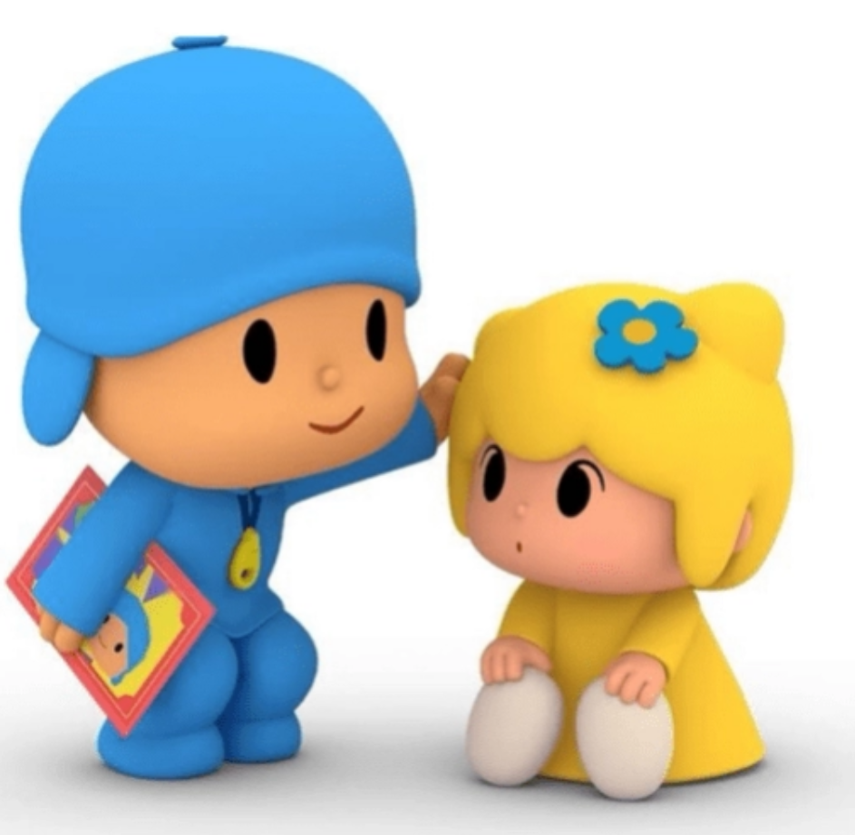
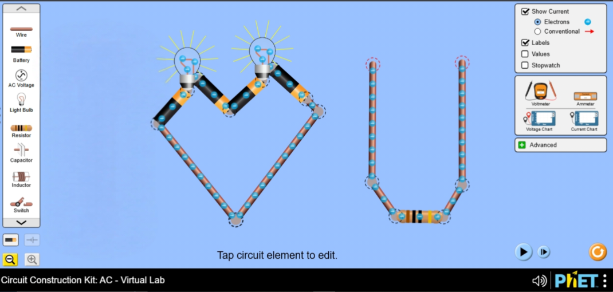

November 2024
01
OSN MTK
waktu itu kita tau muka.
tau nama.
tau muka.
ngobrol? kagak.
interaksi? boro boro.
nyangka suatu hari kita bakal sedeket ini? inimah apalagi😭😭😭
pssst...
someone made something for u.
pelan-pelan ajaa.

oh iya...
bhaap. walaupun cuman beda 1 tahun doang sihh. hehee
ndak kerasa yoo,
skrng km uda segini aja umurnya...
dah makin tua ajee nih, bhapp
sebelum semuanya jadi serandom sekarang...
ternyata ceritanya lumayan panjang juga wok😭
OSN MTK
tau nama.
tau muka.
ngobrol? kagak.
interaksi? boro boro.
nyangka suatu hari kita bakal sedeket ini? inimah apalagi😭😭😭
KELAS 11
mulai satu kelas.
mulai lebih sering ketemu.
tapi yaa...
masih biasa ajaa.
PROJECT KOKU
latihan.
persiapan.
ngobrol.
ketawa.
dan entah gimana... semuanya mulai terasa lebih dekat.
THE TURNING POINT
bukan awal dari semuanya.
tapi mungkin... salah satu titik yang bikin semuanya terasa lebih nyata.
sometimes things don't have one exact beginning.
they just... slowly happen.
ternyata ada beberapa hal kecil yang suka ke-notice...
entah kenapa suasana jadi lebih enak kalau kamu lagi ceria.
kamu bisa random, tapi kalau soal sesuatu yang memang harus dikerjain, kamu tetap tanggung jawab.
ada sisi kamu yang bikin aku sadar kalau ternyata kamu jauh lebih dewasa dari yang kadang kamu tunjukin.
ini tuh... sebenarnya agak lucu sih😭
yang ini juga jangan geer dulu. tapi iya... aku suka.
mungkin justru karena nggak semuanya bisa ditebak, jadi kamu terasa... kamu.
dan entah kenapa, semua versi itu tetap kamu.
somehow, i like all of it.
random little things
entah kenapa satu minuman ini cukup buat ngingetin aku ke kamu.
yes, this very important information has somehow made it into the website.
iya, tulisan tanganmu bagus. ini bukan hasil voting.
nama panggilan yang entah sejak kapan terasa normal banget dipakai.
iya, aku juga masuk ke website ini. privilege pembuat.
current side quest
lately kita lumayan sering pulang agak sore gara-gara ini.
rangka dan sistemnya alhamdulillah udah jadi.
tapi project-nya sendiri belum selesai.
our little side quest isn't over yet.
see? ternyata hal-hal kecil juga bisa punya tempatnya sendiri.
okay.

the girl behind all these stories.
my favorite one.
bhapp mau ucapin ultah aja kata pengantarnya dah sepanjang ini😭
tenang aja kokk.
yg ini beda sama yg di wa teksnya, soalnya di sini tuh yg lebih serius nya, hehee.
Some things are easier to write when you don't have to say them out loud.
So... let me try this properly.
tenang aja kokk, yg ini beda sama yg di wa teksnya.
di sini tuh yg lebih serius nya, hehee.
aalooo bolu ubii, umm mungkin aku seharusnya skrng manggil kamu nenek talita kali yak. bhaap walaupun cuman beda 1 tahun doang sihh. hehee
aku harap aku yg jadi orang pertama yg ngucapin kamu, walaupun sebatas text sii. karna kita sekarang kepisah jarak, alhasil keduluan ur mom atau ga ur bapack yang ngucapin secara langsung. tapi ndak apa, it's okay. ini aja malah pas ganti tanggal sung aku kirim yg di wa😭, 00.00
umm, jujur banyak sebenernya yg pengen disampein, malah saking banyak ga tau harus mulai dari mana dan kayak gimana kata²nya. Asiikkk. Ini aku typingnya biasa aja kali yak😭, agak romantis sikit dah kali yee. bhapp.
Soalnya tuh kalo kata²nya serius banget takutnya nanti kamu nangis. huhuhuuu. terharu. ntar kalo kamu nangis kan ga ada aku di samping yang ngusapin air matanya🥺. ehh ntar aku elapin dari jauh ajaa deh. cupcupcup... aku elap pake kanebo 🫶🏻🫰🏻
nah tuh kann, ga kerasa aku ngetik intronya aja dah sepanjang ini. uda ngalahin kata pengantar di fisika erlangga inimah wok😭. Dah ahh, serius dulu nih ngucapin nya. asiikkk
HABEDEEE TALITAAA.
aku di sini ga pake kata² template tahunan yg mungkin uda sering kamu dengar sebelumnya. Biar lebih spesial dan beda gitu sii, ada unique selling pointnya gitu lahh. Asikk.
Soo, my biggest wish is to keep seeing you smile, not just today, but for all the years to come.
I want to be the one who stands by you through life's brightest days and darkest nights, standing proud of your triumphs, being the anchor you lean on during the roughest seas, and keeping you safe when the ground shakes.
dan seperti biasa, semoga apa yg km harapkan dpt tercapai di usia ini, berbagai harapan, wishlist, pencapaian, dan apapun itu. dan tentunya semakin diperlancar dan dipermudah jalannya. dan yg pasti sehat² yaap, semoga di usia ini bisa jadi pribadi yg lebih baik lg, lebih dewasa, ceria, dan jadi diri sendiri. bisa terus berprogress bareng. Saling support, saling ngingetin jugak
Semoga km tetap jd km yg ceria, bertanggung jawab, dewasa, random, kadang ngambek, kadang plenger😭
semoga km terus bertumbuh jd seseorang yang lebih baik, tanpa harus kehilangan sisi dirimu yang sekarang.
oiyak satu lagi, makin lancar jg dah rezekinya. rejeki ga cuma duit ajaa loh yaak. wkwk
umm, dah kabisan kata² aku wok😭. intinya semua do'a yg baik² turut nyertain km. btw kado ultahnya nanti pas kita di kopken yaaps. mwehehee
Dan kalau suatu hari nanti kamu lagi capek, lagi sedih, atau dunia rasanya lagi nggak terlalu baik sama kamu...
I hope you remember that you don't always have to face everything alone.
Karena, setidaknya untuk sekarang,
aku masih di sini.
sebagai penutup,
makan seblak pake nasi
habedee bolu ubiii🤍
~ Tongzi🤾♂️
it's okey, ndak papaa.
Maybe you'll laugh at how much effort I put into one birthday website.
Maybe you'll forget the little details.
But I hope there is one thing that stays.
okay.
sekarang giliranku.


kamu pernah bilangnya duluan.
dan sejak saat itu, kita memang nggak langsung jadi apa-apa.
kita memilih buat jalan pelan-pelan.
saling kenal. saling adaptasi. saling meyakinkan.
dan sekarang...
kayaknya aku udah siap.
Tata,
officially.
and now...
ternyata website-nya selesai.
tapi ceritanya...
belum.
semoga sehat selalu.
semoga rezekinya lancar.
semoga semua yang kamu usahakan dipermudah.
semoga tetap ceria.
tetap random.
tetap plenger.
tetap jadi Tata.
dan soal kado...
pas kita di Kopken yaaps.
mwehehee.